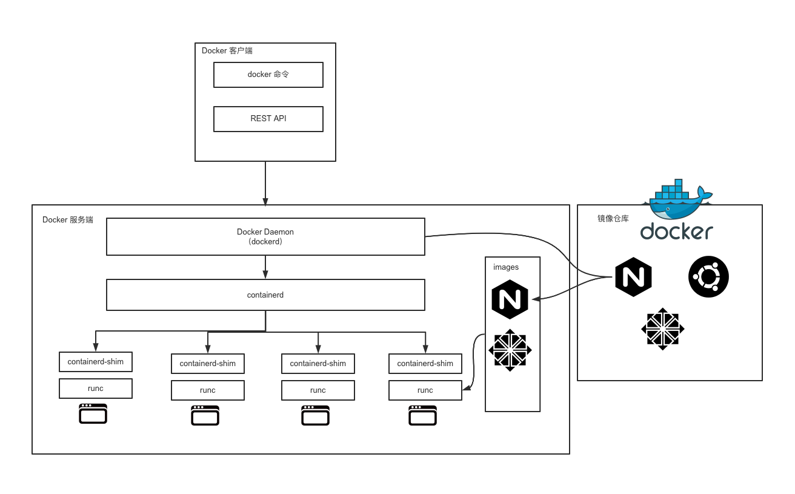
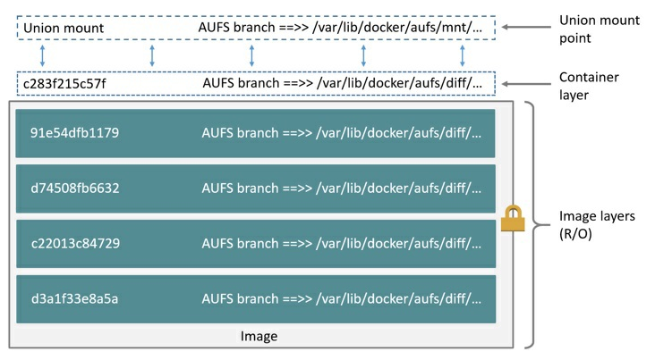
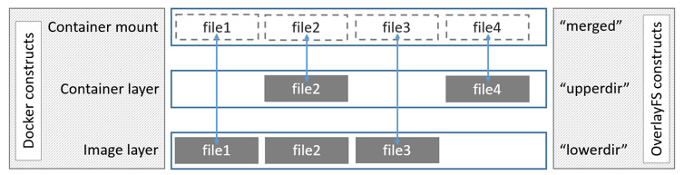
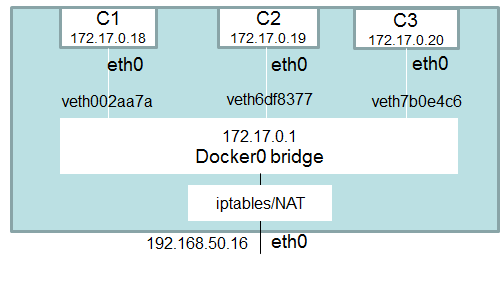

Docker
原理
Chroot
改变进程及其子进程外显的根目录，chroot设置根目录的程序，不能够对这个之外的文件进行访问，外部也不能读取、更改它的内容。
NameSpace
对内核资源进行隔离，容器中的进程只可以访问当前容器命名空间的资源(进程ID，主机名、用户、文件名等)。
Cgroup
限制隔离进程的资源使用(CPU、内存、磁盘、网络等)。
核心概念
容器的5种状态
初建、运行、停止、暂停、删除。

Docker客户端
与服务端交互：
- Docker命令
- REST API
- SDK
Docker服务端
dockerd(Docker Daemon)：负责响应和处理来自客户端的请求，然后将其转化为具体操作。
containerd：通过containerd-shim启动并管理runC
runC：用来运行容器的轻量级工具
docker attach/exec
docker attach：给一个正在运行的容器分配了stdin、stdout、stderr，所有终端窗口同(显示一样的内容；同时阻塞)，使用exit退出时原容器也会退出，可以使用Ctrl+C。
docker exec：相当于fork了一个和容器相同NameSpace的进程。
镜像与容器的区别
docker image inspect < image > 查看镜像分层
镜像中的层都是只读的，容器在镜像上多了一个读写层。
docker commit 可以基于运行时的容器生成新的镜像，将读写层数据写到新的镜像中。
所有写入或修改运行时容器的数据都存储在读写层，当容器停止运行时，读写层的数据也会同时删除掉。
写时复制：因为镜像层的数据是只读的，所以我们运行同一个镜像的多个容器副本时，可以共享镜像存储层，节省磁盘。
文件系统
AUFS

将镜像层(只读)组织成多个目录(branch)，运行时容器文件作为一层容器层(读写)覆盖在镜像层之上，最后通过联合挂载技术呈现。
联合挂载：同一个挂载点同时挂载多个文件系统，将挂载点的源目录与挂载内容进行整合，使得最终可见的文件系统将会包含整合之后的各层文件和目录。
OverlayFS

将镜像层(只读)称为lowerdir，容器层(读写)称为upperdir，最后联合挂载为mergedir，在容器上的改动，在upperdir、mergeddir中都会体现。
Docker网络
docker0网桥

启动Docker Daemon进程之后，会多出一个docker0的网卡，连接容器网段和宿主机网段，IP: 172.17.0.1/16(可修改)。
iptables
Docker会在宿主机系统上增加一些iptables规则，用来管理Docker容器与容器之间及外界的通信。
- 外界访问Docker是通过iptables做DNAT实现的，DNAT将SNAT中的Source转成Destiantion，表示目的地址转换。
网络模式
bridge模式
默认网络模式，所有Docker容器连接到docker0网桥或自定义网桥上，所有的Docker容器处于同一个子网。
host模式
Docker容器和宿主机使用同一个网络协议栈(同一个network namespace)，和宿主机共享网卡、IP、端口等信息。性能更好，但没做网络隔离。
overlay模式
在多个Docker Daemon之间创建一个分布式网络，允许容器之间加密通讯，需要处理容器之间和主机之间的网络包。
macvlan模式
网卡虚拟化技术，可以在同一个物理网卡上虚拟出多个网卡，通过不同的Mac地址在数据链路层进行网络数据的转发。
none模式
除了自带的IO网卡(loopback 127.0.0.1)外没有其它任何网卡、IP等信息，需要自己添加网卡。
容器间网络通信：link
将新创建出来的Docker容器与已有的容器之间创建一个安全通道来做数据交互。
1 | docker run -d -e MYSQL_ROOT_PASSWORD=123456 -p 3306:3306 --name mysql mysql:latest |
host文件修改
容器/etc/hosts文件中多了一条
172.17.0.2 mysql e47e603ffb17记录环境变量
通过link建立连接之后，会在接收容器额外设置一些环境变量保存源容器的信息
1
2
3
4
5
6
7
8
9
10
11
12
13
14
15/ # env | grep MYSQL
MYSQL_PORT_33060_TCP=tcp://172.17.0.2:33060
MYSQL_ENV_MYSQL_MAJOR=8.0
MYSQL_PORT_3306_TCP_ADDR=172.17.0.2
MYSQL_ENV_MYSQL_ROOT_PASSWORD=123456
MYSQL_ENV_GOSU_VERSION=1.7
MYSQL_PORT_3306_TCP_PORT=3306
MYSQL_PORT_3306_TCP_PROTO=tcp
MYSQL_PORT_33060_TCP_ADDR=172.17.0.2
MYSQL_PORT=tcp://172.17.0.2:3306
MYSQL_PORT_3306_TCP=tcp://172.17.0.2:3306
MYSQL_PORT_33060_TCP_PORT=33060
MYSQL_ENV_MYSQL_VERSION=8.0.19-1debian9
MYSQL_PORT_33060_TCP_PROTO=tcp
MYSQL_NAME=/busybox/mysql
Docker数据存储模式
Volumes
Volume会把文件存储在宿主机的指定位置(Linux：/var/lib/docker/volumes/)，这些文件只能由Docker进程修改。
1 | [root@VM-4-5-centos ~]# docker volume create my-vol |
-v/–volume：volume的名字(匿名可忽略):容器内的挂载点
type=volume,src=< VOLUME-NAME>,dst=< CONTAINER-PATH>,volume-driver=local
bind mounts
可以将文件存储到宿主机的任意位置，而且别的应用程序也可以修改。
tmpfs
只支持linux，只会将数据存储在宿主机的内存中，并不会落盘，容器停止，数据就会被清除。
1 | docker run -d -it --name test --mount type=tmpfs,target=/data,tmpfs-mode=1770 nginx:latest |
- tmpfs-size：指定tmpfs的大小，默认不受限制，单位byte
- tmpfs-mode：Linux系统的文件模式，默认1777，任何用户都可以写
为什么说Docker是单进程模型？
不管是在容器还是虚拟机中都有一个1号进程(容器：entrypoint启动进程；虚拟机：systemd进程)，然后其它进程都是1号进程的子进程，或子进程的子进程等等。
回收子进程资源
- 父进程通过系统调用wait()或waitpid()来等待子进程结束，从而回收子进程的资源；
- 异步：子进程结束之后向父进程发送SIGCCHILD信号，基于此父进程注册一个SIGCHILD信号的处理函数进行子进程的资源回收。
僵尸进程
子进程先于父进程退出，并且父进程没有对子进程残留的资源进行回收，就会产生僵尸进程。
孤儿进程
父进程先于子进程退出，产生孤儿进程。虚拟机会将孤儿进程的父进程设置为1号进程即systemd进程，然后由systemd对孤儿进程的资源进行回收，而容器的1号进程为entrypoint启动进程，无法处理。
如何避免？
Kubernetes：可以将多个容器编排到一个pod里，共享同一个Linux NameSpace，本质是k8s实例化出一个pause镜像，其它容器加入这个镜像实例化出的NameSpace实现NameSpace共享。
pod中的1号进程变成了pause，其它容器的entrypoint变成了1号进程的子进程。
Kubernetes
概述
用于容器化应用的容器化应用、自动化部署、扩缩容、管理。
核心功能
- 服务发现和负载均衡
- 自动装箱
- 自动修复
- 存储编排
- 应用自动发布与回滚
- 配置管理
- 批任务执行
- 弹性伸缩
核心概念
Pod
Kubernetes中的最小调度单元，一个Pod可以由多个容器组成，同一个Pod内容器之间没有进行隔离。容器和Pod间的关系，类似进程组和进程。
Deployment
启动多个应用实例时(启动多个相同的Pod)，Deployment可以理解为一组Pod的管理器。
Service
服务发现和负载均衡是通过Service来做的，Service可以关联一组Pod，Service对象创建成功之后会映射到一个域名和固定的IP，只需要访问这种情况就可以通过这个固定的IP就可以访问后端的Pod中运行的应用了。
Configmap
创建和管理不同环境的配置，将配置和应用解耦。
NameSpace
资源的逻辑空间，包括鉴权、资源管理等。Kubernetes中的每个资源，如Pod、Depolement、Service等都有一个NameSpace属主，不同NameSpace的资源不能跨NameSpace访问，NameSpace内的资源要求命令唯一性。
资源隔离：NameSpace
同一个namesace内的资源必须保证名字唯一，不同namespace内的资源可以名字相同。(资源：Pod、Deployment、Service等)
Kubernetes自动创建的3个NameSpace：
- default；
- kube-system；
- kube-public
为Namespace设置资源配额
resource quota资源文件
1 | apiVersion: v1 |
1 | kybectl apply -f resourcequota.yaml -n myNamespace |
为Nmaespace设置资源限制
为了避免单个容器或者pod用光node上的所有可用资源。
LimitRange资源对象
1 | apiVersion: v1 |
1 | kubectl apply -f limitrange.yaml -n myNamespace |
查看pod的资源情况
1 | k8s kubectl describe pods myapp-pod -n myNamespace |
Pod
解决task co-scheduling的问题
Pod中的容器被自动安排到集群中的同一个物理或虚拟机上，并可以一起进行调度。
管理
资源共享和通信
Pod 内的容器之间没有进行资源隔离，可以进行资源共享和通信。
Pod的生命周期
- 挂起(Pending)：Pod已被Kubernetes接受，但有一个或多个容器镜像尚未创建。(调度Pod的时间、通过网络下载镜像的时间)
- 运行中(Running)：该Pod已经绑定到了一个节点上，Pod中所有容器都已被创建，至少有一个容器正在运行或处于启动或重启状态。
- 成功(Succeeded)：Pod中的所有容器都被成功终止了，并且不会再重启。
- 失败(Failed)：Pod 中的所有容器都已终止了，并且至少有一个容器是因为失败终止。
- 未知(Unknown)：因为某些原因无法取得 Pod 的状态，通常是因为与 Pod 所在主机通信失败。
常用参数
1 | apiVersion: v1 #表示 api 对象的版本（比如 Pod 就是一种 api 对象） |
command
affinity
- nodeAffinity：描述了 Pod 和 Node 之间的调度关系，比如把 Pod 调度到含有指定的标签的 Node 节点上；
- requiredDuringSchedulingIgnoredDuringExecution：Pod必须部署到满足条件的节点上，如果没有满足条件的节点，就不停重试。
- preferredDuringSchedulingIgnoredDuringExecution：优先部署到满足条件的节点上，如果没有满足条件的节点，就忽略这些条件，按照正常逻辑部署。
- podAffinity：描述了 Pod 之间的调度关系，比如将某两种 Pod 调度到指定的节点上；
- podAntiAffinity：和 podAffinity 正好相反，这个叫反亲和，比如让某两种 Pod 不要调度到同一个节点。
1
2
3
4
5
6
7
8
9
10
11
12
13
14
15
16
17
18
19
20apiVersion: v1
kind: Pod
metadata:
name: myapp-pod
labels:
app: myapp
spec:
affinity:
nodeAffinity:
requiredDuringSchedulingIgnoredDuringExecution:
nodeSelectorTerms:
- matchExpressions:
- key: <label-name>
operator: In
values:
- <value>
containers:
- name: myapp-container
image: busybox:latest
command: ['sh', '-c', 'echo Hello Kubernetes! && sleep 3600']- nodeAffinity：描述了 Pod 和 Node 之间的调度关系，比如把 Pod 调度到含有指定的标签的 Node 节点上；
hostAliases
Init Container
Pod可以包含多个容器，需要某个或某几个容器优于其他容器启动。
- init container总是运行到完成；
- 每个init container运行完成，下一个容器才会运行，如果有多个init container，则按顺序启动；
- 如果init container运行失败，Kubernetes会不断重启Pod，直到init container成功为止，除非restartPolicy值为Never。
配置管理ConfigMap和Secret
- ConfigMap：普通配置存储；
- Secret：密文存储，如数据库密码等。
ConfigMap
不同环境对应不同的配置，将镜像和配置分离。
创建
通过目录
通过文件
通过环境变量文件
直接编写configmap
1
2
3
4
5
6
7
8
9apiVersion: v1
data:
ui.properties: |
color.good=purple
color.bad=yellow
allow.textmode=true
kind: ConfigMap
metadata:
name: ui-config-file1
2编写configmap对象的yaml文件
kubectl apply -f .\ui.yaml
使用
环境变量
通过volume挂载
使用限制
- ConfigMap是通过etcd存储的(实际上kubernetes中所有API对象都是存储在etcd中的)，etcd的value默认限制1M大小；
- 更新问题。环境变量：需要重启pod；volume挂载方式：10s左右更新。
Secret
Secret对象类型一般用于保存敏感信息，如密码、令牌和ssh key等。
创建
kubectl命令行；
直接编写Secret
1
2
3
4
5
6
7apiVersion: v1
kind: Secret
data:
username: YWRtaW4=
password: MWYyZDFlMmU2N2Rm
metadata:
name: user-password-11
kubectl apply -f .\db-user-pass.yaml
使用
环境变量
通过volume挂载
容器化守护进程DaemonSet
DaemonSet：控制Daemon Pod
Daemon Pod：
- 这个Pod运行在Kubernetes集群中的每一个节点(Node)上；
- 每个节点只能运行一个Daemon Pod实例；
- 当有新的节点(Node)加入到Kubernetets集群时，Daemon Pod会自动被拉起；
- 当有旧节点被删除时，其上运行的Daemon Pod也被删除。
应用场景
- 存储守护进程，如glusted或者ceph；
- 日志收集进程，如fluentd或者filebeat；
- 监控守护进程，如Prometheus的node-exporter；
创建
1 | apiVersion: apps/v1 |
1 | PS C:\Users\Desktop\KubernetesConfigFiles\daemonSet> kubectl get pod |
只在某些指定的节点上面运行Pod
- 指定.spec.template.spec.nodeSelector，DaemonSet将在能够与Node Selector匹配的节点上创建Pod；
- 指定.spec.template.spec.affinity，DaemonSet 将在能够与 nodeAffinity 匹配的节点上创建 Pod。
nodeSelector示例：
给某个节点打上特定的标签
1
2PS C:\Users\Desktop\KubernetesConfigFiles\daemonSet> kubectl label nodes docker-desktop daemonset-label=master
node/docker-desktop labeled在 DaemonSet 的 yaml 文件中指定 nodeSelector
1
2
3
4
5
6
7
8
9
10
11
12
13
14......
spec:
selector:
matchLabels:
name: fluentd-app
template:
metadata:
labels:
name: fluentd-app
spec:
nodeSelector:
daemonset-label: master
containers:
......
nodeAffinity示例
4种策略：
- requiredDuringSchedulingIgnoredDuringExecution：表示 Pod 必须部署到满足条件的节点上，如果没有满足条件的节点，就不停重试；
- requiredDuringSchedulingRequiredDuringExecution：类似 requiredDuringSchedulingIgnoredDuringExecution ，不过如果节点标签发生了变化，不再满足pod指定的条件，则重新选择符合要求的节点；
- preferredDuringSchedulingIgnoredDuringExecution：表示优先部署到满足条件的节点上，如果没有满足条件的节点，就忽略这些条件，按照正常逻辑部署；
- preferredDuringSchedulingIgnoredDuringExecution：表示优先部署到满足条件的节点上，如果没有满足条件的节点，就忽略这些条件，按照正常逻辑部署。其中RequiredDuringExecution表示如果后面节点标签发生了变化，满足了条件，则重新调度到满足条件的节点。
DaemonSet工作原理
控制器会不断检查状态是不是预期的，如果不是预期的就会做一些处理。
DaemonSet Controller：遍历所有的Node，状态有如下情况：
- 没有指定的Pod在运行，需要创建；
- 有指定的Pod在运行，可能有多个 需要将多余的Pod删除；
- 正好有一个指定的Pod在运行。
ReplicationController和ReplicaSet
RepicationController
RepicationController确保集群内任何时刻都有指定的Pod副本处于运行状态，监控管理集群内跨多个节点的多个Pod。
工作原理
ReplicationController会监听Kubernetes集群内运行的Pod个数，如果多于指定副本数，则删除多余的Pod；如果少于指定的副本数，则启动缺少的Pod。即使只需要一个Pod，也建议使用ReplicationController来创建Pod。
ReplicaSet
下一代的Replication Controller，支持新的基于集合的选择器(Deployment，DaemonSet也支持)。
动态伸缩
修改ReplicaSet中的.spec.replicas字段来实现运行的Pod的个数伸缩限制，更新完yaml文件后直接kubectl apply重新应用一下即可；
结合HorizontalPodAutoscaler(水平Pod缩放器)，HPA可以基于CPU利用率(或其它)自动伸缩replication controller、deployment和replica set中的Pod数量。
1
2
3
4
5
6
7
8
9
10
11apiVersion: autoscaling/v1 #hpa的版本
kind: HorizontalPodAutoscaler
metadata:
name: frontend-scaler #hpa的名字
spec:
scaleTargetRef:
kind: ReplicaSet #指定目标类型为ReplicaSet
name: frontend #指定目标ReplicaSet为frontend
minReplicas: 3 #最少pod副本为3
maxReplicas: 10 #最大pod副本为10
targetCPUUtilizationPercentage: 50 #设定cpu百分比，超过50%就增加pod数量
Deployment
类似ReplicaSet，更新和扩缩容操作上更加友好。
创建
Deployment 创建的过程会首先创建一个 ReplicaSet，然后由 ReplicaSet 间接创建Pod。Deployment 负责管理 ReplicaSet，ReplicaSet 负责管理 Pod。
更新
Deployment 的更新实际上就是两个 ReplicaSet(OldReplicatSets、NewReplicaSets) 通过StrategyType 做更新的过程。
回滚
1 | 查看历史版本 |
缩放Deployment
1 | 扩容 |
批处理：Job和CronJob
CronJob 是Job 的定时调度。
Pod 作为 Kubernetes 的基本调度单位，Job 的执行最后也是通过 Pod 来运行的。
通过Job去初始化环境，通过CronJob去定时清理集群中的某些资源。
Job
通过Job去初始化环境，通过CronJob去定时清理集群中的某些资源。
创建
通过 perl 计算 pi 的小数点后两千位数，并输出：
1 | apiVersion: batch/v1 |
并行度：
- 非并行任务：只会启动一个Pod，Pod成功结束就表示Job正常完成了；
- 带有固定competion数目的并行任务：spec.completions 定义 Job 至少要完成的 Pod 数据，即 Job 的最小完成数；
- 具有工作队列的并行任务：通过参数 spec.parallelism 指定一个 Job 在任意时间最多可以启动运行的 Pod数。
清理
1 | kubectl delete jobs pi |
自动清理
TTL(Time To Live)：存活时间
在Job的spec中增加参数ttlSecondsAfterFinished(Job结束之后的存活时间)
1 | apiVersion: batch/v1 |
CronJob
类似于Linux的Crontab，不过CronJob的周期性任务是相对于整个Kubernetes集群。
创建
1 | apiVersion: batch/v1beta1 |
清理
1 | kubectl delete cronjob cronjob-demo |
控制器
ReplicaController、Deployment等都是Kubernetes中的控制器，控制循环，不断比较资源的状态是不是期望状态，如果不是期望状态，则执行一些动作，否则什么都不做。
状态
当前状态
Kubernetes可以认为是一种server-agent架构，server可以是API Server等，agent是运行在每个Node上的kubelet。kubelet通过心跳汇报其所在节点上运行的容器状态和节点状态。
期望状态
Kubernetes中的所有API对象都会提交给API Server，然后保存到ETCD中。期望状态来源于YAML文件，也是存储在ETCD中。控制器不直接与ETCD交互，而是通过API Server来中转。ETCD提供watch机制。
- Deployment 控制器从 API Server 获取到所有带有特定标签的 Pod，并统计数目，这个就是实际状态；
- Deployment 对象中的 Replica 字段的值是期望状态；
- Deployment 控制器比较这两个状态，然后根据比较结果来决定是创建新的 Pod，还是删除已有的 Pod。
StatefulSet
Deployment不能用来管理有状态的应用，它认为所有代理的后端的Pod是相同的。
有状态的应用：
- 后端的多个Pod的角色是不同的，如Zookeeper有一个Leader节点，剩下都是Follower；
- 状态是存储和应用之间绑定的，如Hadoop中的HDFS会启动很多个DataNode，每个DataNode存储的数据是有区别的。
工作原理
控制的Pod拥有唯一的标识，包括顺序标识、稳定的网络标识和稳定的存储，启动周标识就是固定的，重启之后也不会发生变化。
顺序标识
对具有N个Pod副本的StatefulSet，StatefulSet会为每个Pod分配一个固定的名字，如< statefulset-name>-x，其中 x 介于 0 和 N-1 之间。正如我们上面看到的 Pod 的名称 web-0、web-1、web-2。
网络标识
Stateful通过Headless Service控制Pod的网络标识，网络标识的格式为
$(服务名称).$(命名空间).svc.cluster.local，其中cluster.local是集群域。一旦Pod创建成功，就会得到一个匹配的DNS子域，格式为$(pod名称).$(所属服务的 DNS 域名)，其中所属服务由StatefulSet的spec中的serviceName域来设定。由于Pod的名称的固定，所以每个Pod对应的DNS子域也是固定的。稳定存储
Kubernetes为每个VolumeClaimTemplate域创建一个PV。如果没有声明 StorageClass，就会使用默认的 StorageClass。当Pod被调度以及重新调度(比如Pod重启或Node节点挂掉)到节点上时，它的volumeMounts会挂载与其PersistentVolumeClaims相关联的PV。
当Pod或者StatefulSet被删除时，Pod之前使用的PV并不会自动删除，需要手动删除。
部署和扩缩容
- 对于包含 N 个 Pod 副本的 StatefulSet，当部署时，Pod 按 0，1，…，N-1 的顺序依次被创建的。
- 当删除 StatefulSet 时，Pod 按 N-1，…，1，0 的顺序被逆序终止的。
- 当缩放操作应用到某个 Pod 之前，它前面的所有 Pod 必须是 Running 和 Ready 状态，所谓前面的 Pod 的意
思是序号小于当前 Pod 的序号。 - 在 Pod 终止之前，所有序号大于该 Pod 的 Pod 都必须完全关闭。
使用Service访问一组特定的Pod
Service可以理解为一种访问一组特定Pod的策略。
如Pod 运行了 3 个副本，并且是无状态的。前端访问该应用程序时，不需要关心实际是调用了那个 Pod 实例。通过Service解耦，Service 与后端的多个 Pod 进行关联（通过 selector），前端只需要访问Service 即可。
创建
对80端口的TCP请求转发到标签app=nginx的并且使用TCP端口80的Pod上
ClusterIP 类型的 Service 只能在集群内部进行访问
1 | apiVersion: v1 |
多端口Service
设置固定IP
在 Service 的定义中通过参数 spec.clusterIP 指定自己的clusterIP。
服务发现
TODO
Headless Service
拥有ClusterIP的Service，会自动做负载均衡。
指定负载均衡策略：指定ClusterIP的值为None，此时创建出来的Service则为Headless Service。这个时候做服务发现时，这个Service返回的为后端的Pod列表。
Service类型
- ClusterIP：默认的 Service Type，通过集群的内部 IP 暴露服务，只能在集群内部进行访问；
- NodePort：通过每个 Node 上面的某个端口 （NodePort）暴露服务。通过该端口的请求会自动路由到后端的ClusterIP 服务，这个 ClusterIP 服务是自动创建的。通过 NodePort，我们可以在集群外部访问我们的服务，但是，在生产环境上面并不建议使用 NodePort；
- LoadBalancer：使用云厂商提供的负载均衡器，可以向外部暴露服务。外部的负载均衡器可以路由到
NodePort 和 ClusterIP 服务； - ExternalName：通过返回 CNAME 将服务映射到 externalName 字段中的内容；
- Ingress：严格来说，Ingress 不是一种服务类型，而是用来充当集群的服务的入口点。Ingress 可以将路由规
则整合到一个资源中，然后通过同一个 IP 地址暴露多个服务。
NodePort
1 | apiVersion: v1 |
1 | kubectl get service |
NodePort 类型的 Service 后端还是通过 ClusterIP 来实现。
Node本地对应的端口为一个区间随机生成的，默认为30000-32767，可以通过参数–service-node-port-range来指定。
指定NodePort：
1 | apiVersion: v1 |
- NodePort：Node节点本地启动的用来监听和转发请求的端口，每个节点上都会启动；
- Port：NodePort类型的Service自动创建的ClusterIP的端口；
- TargetPort：ClusterIP转发的目标端口。
所以对于NodePort类型的Service，外部的请求顺序是：NodePort -> Port -> TargetPort
Ingress
1 | apiVersion: extensions/v1beta1 |